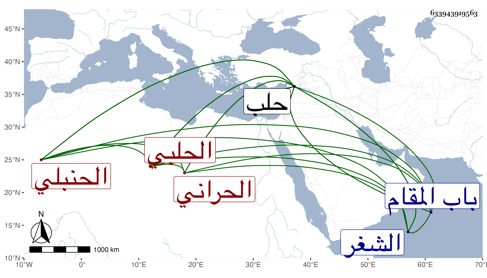

0902Sakhawi.DawLamic.ITO20230111-ara1.EIS1600.633943919563
Biography ID: 633943919563
3
عبد الله بن إبراهيم بن أحمد الجمال الحراني الأصل الحلبي الحنبلي كان يذكر أنه من ذرية الشرف بن أبي عصرون وأنه شافعي الأصل وولى قضاء الشغر قبل الفتنة شافعيا وكذا كانت له وظائف في الشافعية بحلب تحول بعد مدة حنبليا وولى قضاء الحنابلة بحلب مرة بعد أخرى كأنظاره . قال العلاء بن خطيب الناصرية وكان حسن السيرة دينا عاقلا . ولى القضاء ثم صرف ثم أعيد مرارا ثم صرف قبل موته بعشرة أشهر . ومات في شعبان سنة إحدى وعشرين . ذكره شيخنا عن نحو من ست وستين سنة ودفن بتربة الأذرعي والباريني خارج باب المقام من حلب ذكره شيخنا في أنبائه باختصار .
